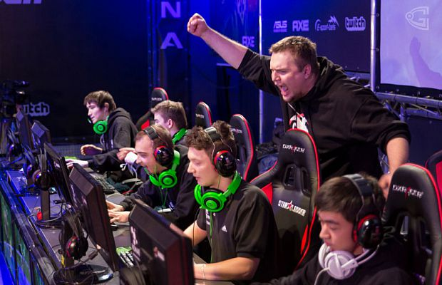

Форум
Добро пожаловать на форум КиберОлимп! Здесь вы можете обсудить турниры, задать вопросы и получить поддержку.
Новости
Следите за последними новостями киберспорта:
Tundra Esports или Team Spirit — кто победит в матче на FISSURE PLAYGROUND Belgrade 2025?

DOTA2
29 января в 16:00 мск состоится матч между Tundra Esports и Team Spirit в плей-офф FISSURE PLAYGROUND Belgrade 2025 по Dota 2. По мнению аналитиков БК BetBoom, у команд равные шансы на победу в этом противостоянии.
Встреча пройдет в формате best-of-3. На успех обоих составов букмекеры дают коэффициент 1.90.
Победитель из этой пары пройдет в финал виннеров, а проигравший продолжит выступление в нижней сетке. В прошлом раунде Tundra одолела Heroic, а Spirit оказалась сильнее PARIVISION.
FAQ
Часто задаваемые вопросы и ответы на них:
- Как зарегистрироваться на турнир? - Перейдите в раздел "Турниры" и выберите интересующий вас турнир. Нажмите кнопку "Зарегистрироваться" и следуйте инструкциям.
- Как связаться с поддержкой? - Вы можете написать нам в разделе "Поддержка" или на почту cyberolympgamer@yandex.ru.
- Какие игры поддерживаются на платформе? - Мы поддерживаем CS2, Dota 2, Rocket League, Valorant и другие популярные игры.
Обсуждения
Здесь вы можете обсудить последние турниры, стратегии и новости киберспорта: